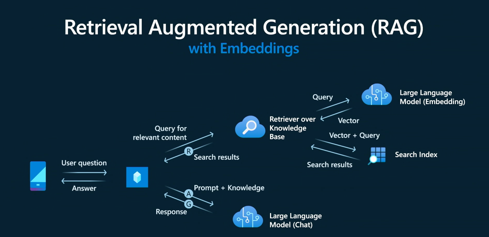

2. The RAG Pattern¶
Foundation large language models are trained on massive quantities of public data, giving them the ability to answer general questions effectively. However, our retail copilot needs responses grounded in private data that exists in the retailer's data stores. Retrieval Augmented Generation (RAG) is a design pattern that provides a popular solution to this challenge with this workflow:
- The user query arrives at our copilot implementation via the endpoint (API).
- The copilot sends the text query to a retrieval service which vectorizes it for efficiency.
- It uses this vector to query a search index for matching results (e.g., based on similarity)
- The retrieval service returns results to the copilot, potentially with semantic ranking applied.
- The copilot augments the user prompt with this knowledge, and invokes the chat model.
- The chat model now generates responses grounded in the provided knowledge.
